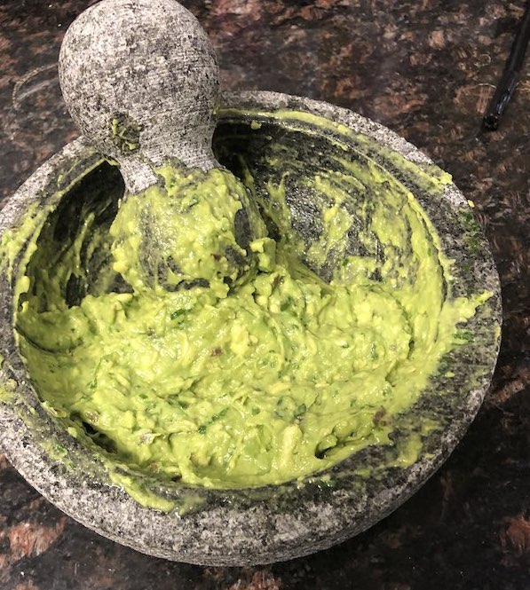

Guacamole

Guacamole
Guacamole is perfect. Really not much else to say. Very flavorful and can be put on just about anything.
Ingredients
- Avocados
- Cilantro
- Garlic
- Lime
- Red Onion
- Salt
Steps
- Dice your red onion into a small dice.
- Peel your garlic
- Chop your cilantro into small piece.
- Add the onion, garlic and cilantro to a molcajete and smash until all the ingredients are throughly combined into a liquidy paste
- Peel and remove the pit from your avocados and add to the molcajete.
- Smash the avocados, incorporating the other ingredients thoroughly.
- Once the avocado is smooth, add salt and lime juice and mix well.
Home